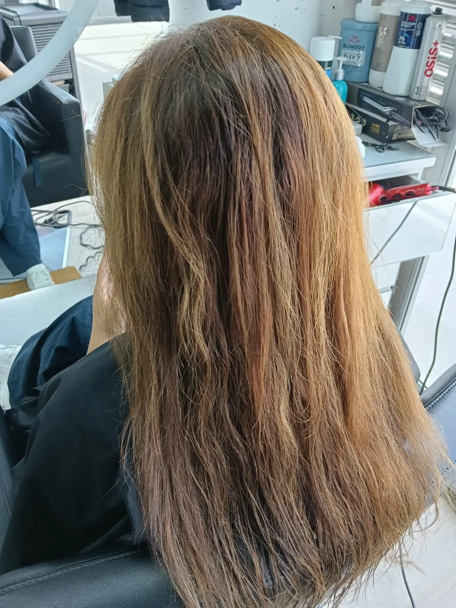

Rubios en la Sabana: el reto de mantener el tono cenizo
Lucir un balayage rubio o un tono platinado perfecto es el sueño de muchas, pero vivir en áreas de gran altitud como Chía a 2,564 metros sobre el nivel del mar complica las cosas de formas que pocos estilistas te cuentan.
Esta altitud implica una radiación UV mucho más agresiva de lo normal. Los rayos del sol oxidan rápidamente tanto la melanina natural como el color artificial. Además, las aguas locales suelen tener una alta concentración de minerales y un nivel de dureza que se adhiere a la cutícula del cabello, generando ese indeseado "efecto oxidado" donde los rubios cenizos terminan viéndose naranjas o cobrizos en pocas semanas.
La verdad honesta: ser rubia en la Sabana requiere...
- Matización cada 20-30 días en el salón para contrarrestar los pigmentos cálidos inducidos por el ambiente exterior.
- Filtro UV capilar diario (en formato de cremas para peinar o serums ligeros). Olvidarlo es el error #1 antes de salir a la calle en un día despejado bogotano.
- Inversión en productos de grado profesional. Los champús de supermercado contienen sulfatos que literalmente arrastran el matizador que preserva tu balayage.

¿Necesitas rescatar tu color?
Mira nuestras correcciones de color reales en Chía
La caída del cabello en Bogotá y Chía: ¿es el clima o estrés?
Pasar abruptamente de la temporada de intensas lluvias a días extremadamente secos y soleados genera en nuestro cuerpo una respuesta reactiva. Este fenómeno climático local suele desencadenar lo que los dermatólogos llaman Efluvio Telógeno estacional.
Básicamente, los folículos capilares cambian masivamente a una fase de descanso acelerada, lo cual resulta en esa "sorpresa" aterradora en la ducha. Sumado al ajetreado ritmo de vida y estrés de la ciudad, es la tormenta perfecta para la caída de hebras capilares.
Señal de alerta: cuándo preocuparte
Perder hasta 100 hebras de cabello al día es completamente normal (fase de renovación biológica). Sin embargo, si notas parches vacíos, una menor densidad en la coronilla o un aumento agresivo en la almohada, es momento de intervenir.
En Narbos Salón realizamos diagnósticos del cuero cabelludo antes de aplicar cualquier  químico para prevenir daños irreversibles. Acude a profesionales a tiempo.
químico para prevenir daños irreversibles. Acude a profesionales a tiempo.
Calculadora mágica de oxidación
Descubre la probabilidad de que tu rubio pierda su tono platinado y te recomendamos una rutina.
Preguntas frecuentes sobre el cabello en la Sabana
¿Por qué el rubio se oxida más rápido si vivo en Chía o Cajicá?
Debido a la gran altitud (2,564 msnm), la radiación UV es más intensa y oxida los pigmentos rápidamente. Además, la dureza del agua de la Sabana deposita minerales que tornan el rubio naranja o cobrizo si no se usa protección profesional.
¿La caída del cabello en la Sabana es permanente?
Generalmente es transitoria (efluvio telógeno estacional) causada por cambios bruscos de clima y estrés. En Narbo's Salón realizamos diagnósticos para frenar la caída y fortalecer el folículo a tiempo.
¿Cada cuánto debo realizarme una matización profesional si vivo en esta zona?
Para mantener un tono impecable, recomendamos una matización o baño de color cada 20 a 30 días, complementado con protectores UV capilares de uso diario para contrarrestar la oxidación del entorno.